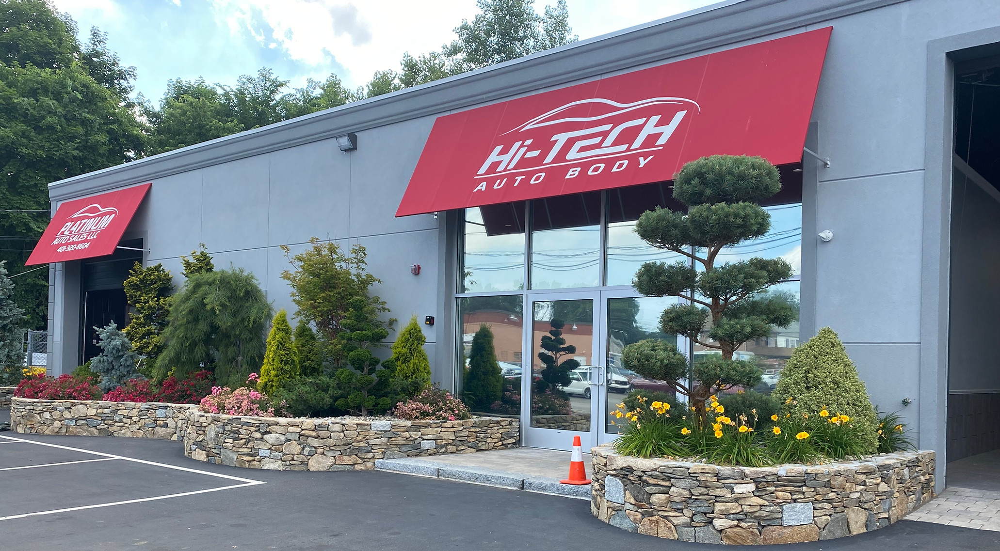
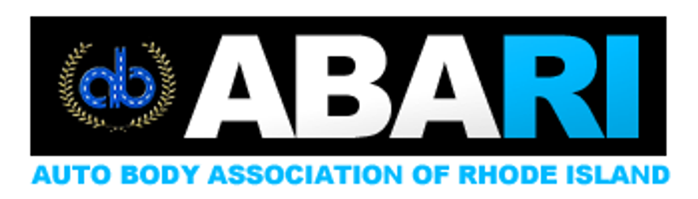
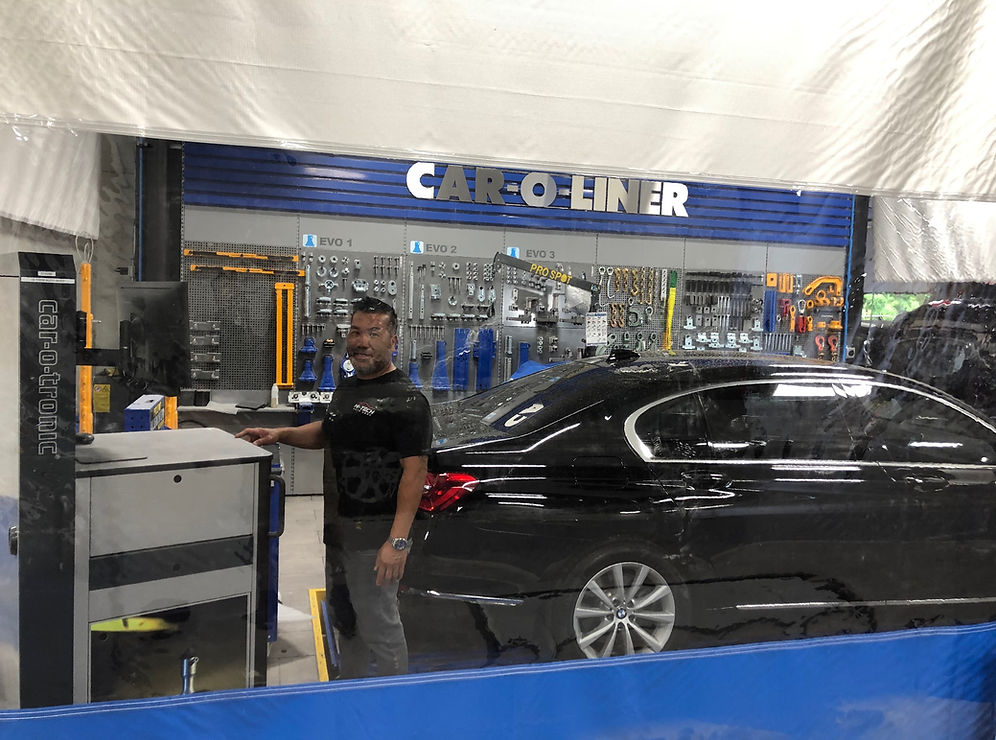
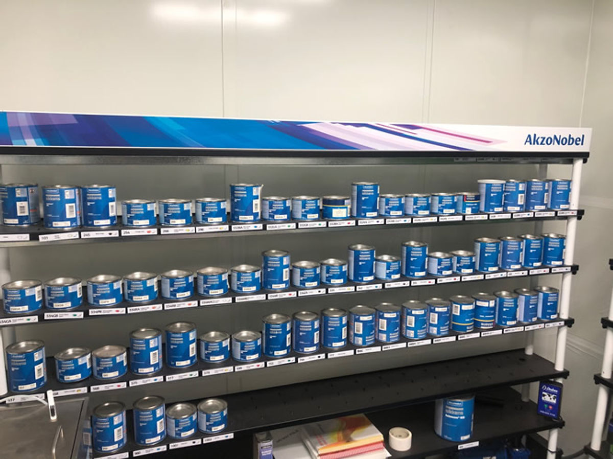

Visit the shop
30 Aster St West Warwick, RI 02893
West Warwick, Rhode IslandCollision Repair in West Warwick, RI
Hi-Tech Auto Body helps Rhode Island drivers move from estimate to delivery with structural repair, expert body work, precise paint matching, and hands-on insurance coordination.
The team pairs modern equipment with service that stays personal from your first call through final pickup.

Visit the shop
30 Aster St West Warwick, RI 02893Start with one call
(401) 615-0331 General@hitechri.comConfidence built in
100% guaranteed lifetime warranty
Services
Collision repair is only part of the job. Hi-Tech also helps with claims, transport, rentals, and the details that usually slow people down after an accident.
Structural repair, expert body work, parts procurement, and refinishing handled from intake to delivery.
Computerized paint formulas and a finish process built to bring damaged panels back in line with the original vehicle color.
Estimate support, supplement communication, and help navigating the repair conversation with your insurance carrier.
If the vehicle cannot make it in safely, the shop can help arrange pickup or carrier service and keep the process moving.
Guidance on loaner or rental options while your vehicle is being repaired, with help coordinating timing around drop-off.
Advanced tools, updated repair processes, and a shop environment built for current vehicle standards.
Inside The Shop
Hi-Tech emphasizes state-of-the-art equipment, evolving repair procedures, and clear communication so customers are not left guessing what happens next.

Modern collision work takes more than panels and paint. The shop highlights advanced equipment built for today’s repair standards.

Computerized color matching helps deliver refinishing that looks consistent, intentional, and factory-clean.
Why It Matters
Process
From the first call to final pickup, the goal is to keep the path clear, reduce downtime, and make the next step easy to understand.
Call, email, or bring the vehicle in. If it is not driveable, ask about tow or flatbed coordination.
Hi-Tech helps review damage, work through estimate details, and communicate with your insurance company.
Parts, structural repair, body work, and precision color matching are completed under one roof.
Rental timing, final delivery, and warranty-backed workmanship all get wrapped into one smoother handoff.
If you need to leave the vehicle after business hours, the shop offers a key drop to make intake easier.
Hi-Tech is a member of the Auto Body Association of Rhode Island, reinforcing its focus on quality, ethics, and service.
Their current site states that all completed work is backed by a 100% guaranteed lifetime warranty.
Contact
Reach out to schedule an estimate, ask about the repair process, or get help figuring out insurance, towing, rental timing, or after-hours vehicle drop-off.
30 Aster St
West Warwick, Rhode Island 02893